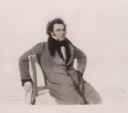

Winterreise
4 recordings · 16 min
In the Hall
- 1. Gute NachtHans Duhan, baritone; Ferdinand Foll, piano · April–May 19284:09
A man leaves his lover’s house in snow, keeping step with the piano. In Hans Duhan’s Gute Nacht, the first verse leads straight to the third; the final verse turns briefly to major as he closes the door quietly.
Notes as it plays · how it is joined
- Six bars of footsteps
Mässig, in gehender Bewegung — moderate, with a walking motion. The piano sets off in repeated quaver chords before the voice arrives. The tread is already there; the singer has to join it.
- A stranger at both ends
“Fremd bin ich eingezogen, / Fremd zieh’ ich wieder aus.” I came here a stranger; a stranger I leave. Müller puts the same word at the start of both lines. Schubert’s melody falls over the piano’s steady steps.
- Love has wandering feet
Duhan goes straight to the third verse, leaving out the second. “Die Liebe liebt das Wandern” — love loves to wander. The singer gives love the same restless feet that carry him away from the house.
- The door closes softly
The last verse turns to the major. He does not want to wake her, so he closes the door softly and writes goodnight on the gate. The piano keeps the same walking chords beneath this unexpectedly tender farewell.
- The footsteps outlast the voice
After a slight slowing, a tempo brings back the walking pace. The final sung note gives way to six bars of piano alone. The major-key goodnight has passed; the ending is minor again.
How it is joined
- The singer joins the footsteps
Six bars of piano establish the minor-key walking chords. The singer enters with a pickup at the end of bar 7 and a descending melody. The piano keeps its quavers and its original pace beneath the new voice.
- The third verse follows the first
Five bars of piano lead to the third verse over the same minor-key walking chords. Duhan omits the repeat that would carry the second stanza, moving directly from remembered love to the question of why he should stay.
- The same steps in major
The piano plays five bars alone, then the last stanza begins pianissimo in the major. Schubert changes D minor to D major, raising F to F♯. The quaver chords keep their pace while the singer tries to leave without waking his beloved.
- The minor returns beneath the farewell
Un poco ritardando slows the last sung phrase. A tempo then restores the pulse and D minor returns beneath the final vocal note. The piano continues alone for six bars, ending on the minor chord.
- 5. Der LindenbaumHans Duhan, baritone; Ferdinand Foll, piano · April–May 19284:16
A linden tree by a well recalls sweet dreams and words carved into its bark. In Schubert’s song, the piano rustles through the branches while the traveller passes in the dark, tempted by the tree’s offer of rest.
Notes as it plays · how it is joined
- Branches before the voice
The piano’s fast figures rustle through seven bars before the singer enters. Schubert marks them pianississimo. Their E-major warmth belongs to the remembered tree; the winter wind will soon make the same motion less welcoming.
- Words cut into bark
“Am Brunnen vor dem Tore” — by the well outside the gate. A linden tree stands there, full of the traveller’s memories. He dreams in its shade and carves loving words into its bark, returning in joy and sorrow.
- Eyes shut in the dark
The piano turns to E minor. The traveller passes the tree at night and closes his eyes, though it is already dark. The familiar rustling figure has lost the major key that made it sound like shelter.
- The hat blows away
A low C♮ jolts the piano away from E major. Cold wind strikes his face and blows off his hat. “Ich wendete mich nicht” — I did not turn back. He keeps going while the piano’s figures buffet him.
- Rest remains behind him
The major-key tune returns. He is hours away now, but still hears the branches: “Du fändest Ruhe dort” — you would find rest there. Schubert repeats the invitation. The tree grows harder to leave after it has vanished from sight.
- The branches after the song
The piano brings back its opening rustle and closes softly in E major. The traveller has finished speaking; the branches seem to carry on without him.
How it is joined
- The rustling figure turns to minor
The first two stanzas end in E major. The piano’s rustling figure returns in E minor, with G♮ replacing G♯. After three bars alone, the piano receives the voice again: the traveller is passing the tree in darkness.
- The tree calls in E major
The voice continues straight into the next stanza. E major returns, and the piano carries the tree’s invitation with B-major dominant harmony leading towards E. The traveller hears the branches offering him rest.
- A low C disturbs the tree
The piano strikes a low C♮, marked forzando, against the E-major surroundings. G♮ enters its rapid figures too. The singer’s smooth tune breaks into the harsher phrases of the cold-wind stanza.
- The wind subsides over B
The voice stops, leaving four bars of piano over a low B. The rapid figures diminish. The last stanza begins pianississimo, recovering the opening tune and E major as the traveller remembers the distant tree.
- 11. FrühlingstraumHans Duhan, baritone; Ferdinand Foll, piano · April–May 19284:19
In Schubert’s Frühlingstraum, May flowers and a lover’s embrace disappear at a cockcrow. Hans Duhan and Ferdinand Foll move between a lilting dream, a fast awakening and the slow ache of a cold room.
Notes as it plays · how it is joined
- Flowers before the cockcrow
The piano begins a soft, swaying tune in 6/8. The singer dreams of bright flowers, green meadows and noisy birds. Schubert gives this imaginary May morning an easy, almost dancing step.
- Cocks and ravens
“Da war es kalt und finster” — it was cold and dark. The cockcrow has woken him; ravens shriek on the roof. Schubert marks Schnell, fast, and replaces the piano’s sway with short chords separated by rests.
- Leaves painted on glass
The music slows to Langsam in 2/4. Repeated piano chords hold the room still as the singer examines the leaves on his window: frost has supplied the flowers his dream promised. He imagines laughter at a man who sees blossoms in winter.
- The dream admits a lover
Wie oben — as before. The piano brings back the opening 6/8, and this time the dream contains a young woman, kisses and love returned. The same melody has found something more painful to lose.
- The heart wakes this time
The cockcrow returns with the same fast, clipped accompaniment. In the first awakening, his eye opens; now his heart wakes. He sits alone and thinks about the dream.
- A heart still warm
“Noch schlägt das Herz so warm” — the heart still beats so warmly. He closes his eyes and asks when the window leaves will turn green, when he will hold his beloved again. Schubert repeats the last question and closes in the minor.
How it is joined
- The voice joins the piano’s dream
The piano’s soft broken chords establish the swaying 6/8. The voice enters on the last quaver of bar 4, keeping the same pulse. Schubert’s A-major accompaniment carries the singer straight into the dream of flowers.
- Schnell cuts off the dream
The dream’s last note gives way to Schnell. The piano abandons its flowing broken chords for short, pointed strokes with rests between them. The voice tells of the cockcrow, the cold room and ravens on the roof.
- Slow chords at the window
Langsam replaces Schnell, and 2/4 replaces 6/8. The piano repeats quiet chords around a held note while the singer studies the window. In Schubert’s original key, A remains in both hands and the bass begins on A.
- The piano begins the dream again
Wie oben restores the opening tempo and 6/8. Four bars of piano bring back the lilting A-major music before the voice joins it with a dream of kisses and returned love.
- The clipped chords return
Schnell returns at bar 58. The piano resumes its short chords and rests, cutting off the second dream just as it cut off the first. This time Müller gives the awakening to the heart.
- The slow chords return
Langsam and 2/4 return with the piano’s quiet repeated chords. The singer closes his eyes. The question about holding his beloved is repeated, and the final chord changes Schubert’s opening A major to A minor.
- 24. Der LeiermannHans Duhan, baritone; Ferdinand Foll, piano · April–May 19283:16
An old man turns his hurdy-gurdy on the ice, barefoot, with an empty plate at his feet. Schubert ends Winterreise beside him: the piano holds its bare fifth while the traveller asks whether they might go on together.
Notes as it plays · how it is joined
- A fifth without a third
The piano holds a bare fifth in the bass. Above it, a little tune turns again and again, imitating the hurdy-gurdy’s wheel and drones. Eight bars pass before the singer enters this cold, narrow world.
- Barefoot on the ice
The old man sways barefoot on the ice. His small plate stays empty. Müller gives him frozen fingers, no audience and no earnings; the piano gives him a tune that keeps turning anyway.
- Nobody will hear him
“Keiner mag ihn hören, / Keiner sieht ihn an” — nobody cares to hear him; nobody looks at him. The dogs growl around the player. The same bare fifth remains under the voice, indifferent to every new detail.
- The traveller speaks to him
“Wunderlicher Alter” — strange old man. The traveller finally addresses him, asking to go with him and to have his songs accompanied by the hurdy-gurdy. The last line leaps an octave. The piano’s drone holds fast.
- The wheel makes another turn
The singer falls silent. The piano repeats its little figure and ends on a plain minor chord over the same drone. The old man never answers.
How it is joined
- A voice above the drone
The voice enters after eight piano bars. The left hand keeps its open fifth; the right hand’s turning figure fills the spaces between the vocal phrases. In Schubert’s original key the drone is A–E, with no third to soften it.
- The voice returns to an empty audience
After the repeated lines about the empty plate, the piano plays four bars alone. The voice returns with the same melody and the words about nobody listening. The bass fifth continues across the join.
- The tune turns without the singer
The fourth stanza ends, and the voice rests for four bars. The piano repeats the earlier interlude: its small right-hand figure turns above the open fifth while a short line moves beneath it in the left hand.
- The singer turns towards the player
The singer returns over the drone with repeated notes, addressing the old man directly. The last line climbs an octave as he asks for accompaniment to his songs. The bass remains fixed beneath the rising voice.
- The drone outlasts the question
As the singer holds his last note, the piano begins its opening figure again. The voice stops, the piano drops to piano, and the same bass fifth supports the final minor chord.